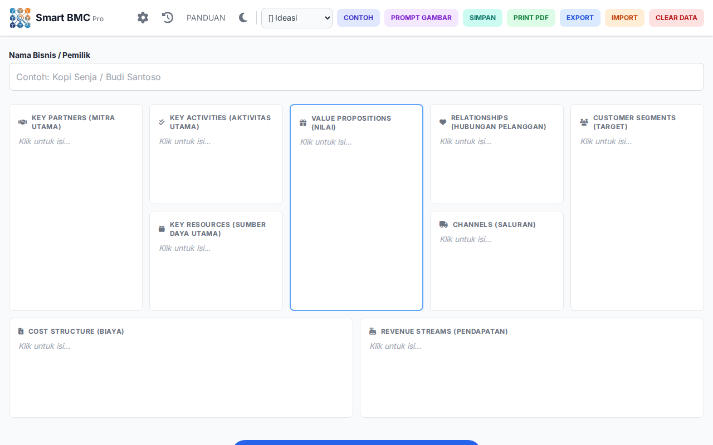
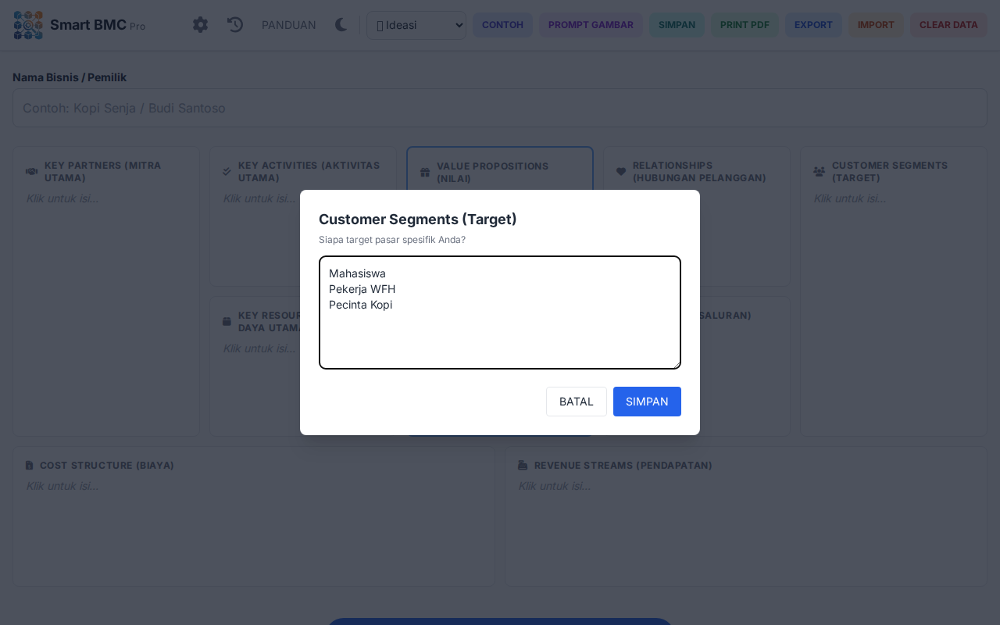
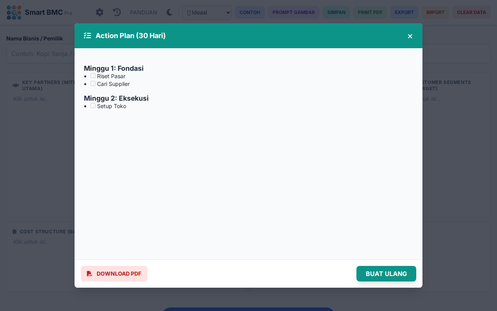
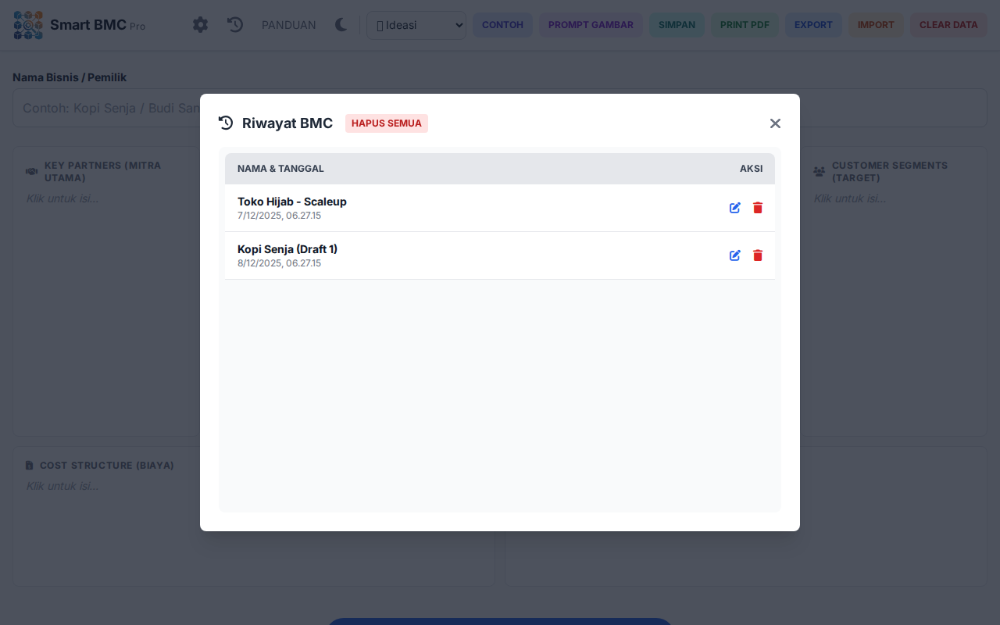

Panduan Lengkap Penggunaan
Maksimalkan potensi bisnis Anda dengan bantuan AI.
Daftar Isi
BMC atau Business Model Canvas adalah alat visual yang digunakan untuk merancang, menggambarkan, dan menganalisis model bisnis suatu perusahaan atau usaha. Alat ini dikembangkan oleh Alexander Osterwalder dan telah menjadi alat yang populer digunakan oleh pengusaha, manajer bisnis, dan perusahaan startup.
Framework ini memiliki konsep yang jauh lebih ringkas dibandingkan dengan business plan lainnya, karena hanya disusun ke dalam satu halaman saja. Tak heran, Business Model Canvas adalah salah satu model bisnis yang populer di kalangan pebisnis.
Tujuan Business Model Canvas
Tujuan utama dari Business Model Canvas adalah menyediakan panduan yang mudah dipahami untuk mengidentifikasi kekuatan, kelemahan, serta peluang di pasar, sehingga perusahaan dapat mengembangkan strategi yang lebih inovatif dan adaptif.
Dengan memetakan sembilan elemen inti—seperti segmen pelanggan, proposisi nilai, dan sumber daya utama—Business Model Canvas membantu pelaku bisnis memahami hubungan antar elemen dan menentukan fokus untuk meningkatkan kinerja.
Menggunakan contoh Business Model Canvas yang tepat juga memungkinkan perusahaan untuk mempelajari cara mengembangkan solusi yang relevan dan sesuai kebutuhan pelanggan, sehingga mendorong pertumbuhan bisnis yang berkelanjutan.
1 Alur Singkat Penggunaan
Berikut adalah langkah ringkas untuk mulai menggunakan aplikasi BMC Pro:
- Dapatkan API Key: Lakukan sekali saja di awal agar fitur AI bisa bekerja.
- Input Bisnis: Masukkan ide bisnis manual atau minta AI buatkan contoh.
- Analisa: Minta AI menganalisa model bisnis Anda, membuat SWOT, atau Pitch Deck.
- Action Plan: Buat rencana kerja 30 hari yang siap dieksekusi.
- Simpan & Cetak: Simpan ke riwayat browser atau cetak laporan PDF.
2 Cara Mendapatkan API Key Gratis
Aplikasi ini menggunakan kecerdasan buatan (AI) dari Google Gemini. Agar bisa berjalan, Anda memerlukan "kunci" (API Key) yang bisa didapatkan gratis.
- 1 Buka website Google AI Studio.
- 2 Login menggunakan akun Google (Gmail) Anda.
- 3 Klik tombol biru besar bertuliskan "Create API key".
-
4
Salin kode panjang yang muncul (biasanya diawali huruf
AIzaSy...). - 5 Kembali ke aplikasi BMC Pro, klik ikon Gerigi (Pengaturan) di pojok kanan atas, tempel kode tersebut, dan klik SIMPAN.
3 Mengisi Business Model Canvas
Ada dua cara untuk mengisi 9 kotak BMC:
Cara Manual
Klik salah satu kotak (misal: "Customer Segments"). Sebuah jendela akan muncul. Ketik ide Anda di sana, lalu klik "Simpan". Kotak akan terisi.
Cara Otomatis (Pakai AI)
Bingung mau isi apa? Biarkan AI membantu!
- Klik tombol "CONTOH" di menu atas.
- Masukkan jenis bisnis Anda (contoh: "Toko Hijab Online" atau "Aplikasi Bengkel").
- Tekan Enter. Dalam hitungan detik, ke-9 kotak akan terisi otomatis dengan contoh yang relevan.
- Anda bisa mengedit isinya lagi secara manual jika ada yang kurang pas.
4 Fitur Canggih AI
Setelah BMC terisi (minimal 3 kotak), Anda bisa menggunakan fitur analisa:
Analisa Bisnis
Klik tombol besar "Analisa Bisnis Saya". AI akan membaca BMC Anda dan memberikan masukan, kritik, serta saran perbaikan. Hasil analisa ini bisa Anda Edit jika ingin menambahkan catatan sendiri.
Action Plan
Fitur unggulan! Klik tombol "Action Plan". AI akan membuatkan jadwal kerja 30 Hari berdasarkan tahap bisnis Anda (Ideasi/Startup/Scaleup). Rencana ini bisa di-download terpisah sebagai PDF.
SWOT
Klik "Analisa SWOT" untuk melihat Kekuatan, Kelemahan, Peluang, dan Ancaman bisnis Anda secara instan.
Pitch Deck
Butuh presentasi ke investor? Klik "Pitch Deck" untuk mendapatkan kerangka slide presentasi yang profesional.
5 Menyimpan & Mengelola Data
- Simpan (Save): Klik tombol "SIMPAN" untuk menyimpan snapshot BMC Anda saat ini ke Riwayat.
- Auto-Save: Aplikasi otomatis menyimpan pekerjaan Anda saat Anda berpindah tab atau menutup browser (hanya jika ada perubahan data).
- Riwayat (History): Klik ikon Jam/History untuk melihat daftar simpanan Anda. Anda bisa memuat ulang (Load) data lama.
- Hapus (Delete): Di menu Riwayat, Anda bisa menghapus satu per satu, atau menggunakan tombol "Hapus Semua" untuk membersihkan seluruh riwayat sekaligus (Hati-hati, tidak bisa dikembalikan!).
- Export/Import: Gunakan tombol Export untuk menyimpan data ke file
.sbmcdi komputer (aman sebagai backup). Gunakan Import untuk membukanya kembali. - Cetak PDF: Klik "Print PDF" untuk mengunduh laporan lengkap BMC + Hasil Analisa + Chat Konsultasi.